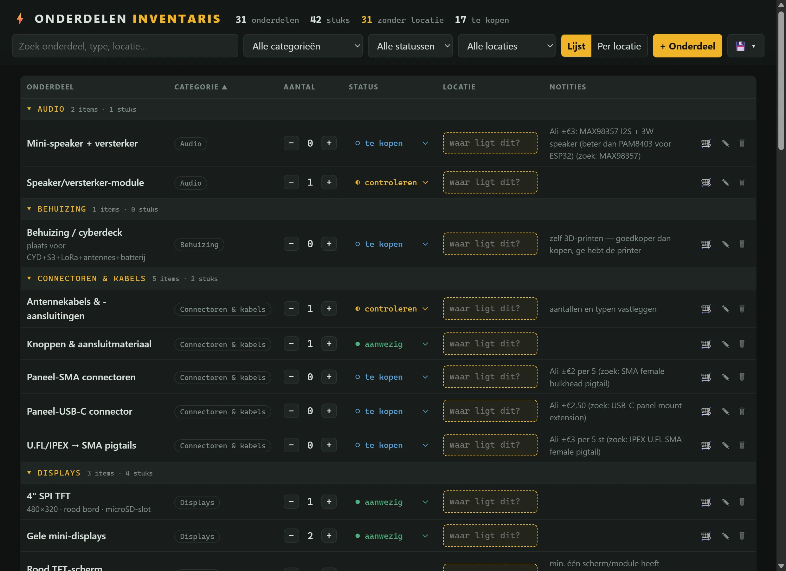
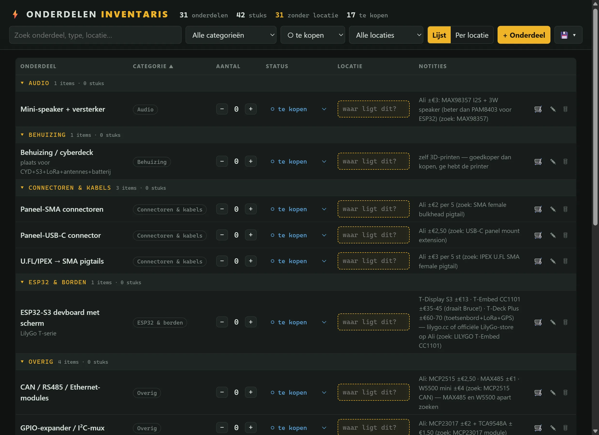

SINGLE-FILE APP · OPERATIONS · HARDWARE
Onderdelen Inventaris
Een eigen voorraadbeheer voor mijn elektronica-werkbank: wat heb ik, waar ligt het en wat moet ik nog kopen — gebouwd als één snelle lokale app.
RESULTAAT
Tientallen onderdelen gecatalogiseerd met status en locatie — en een automatische te-kopen-lijst met prijsnotities en zoektermen per onderdeel.


01 HET PROBLEEM
Elektronica-onderdelen verzamelen zich sneller dan je denkt: ESP32-borden, displays, sensoren, kabels — verspreid over dozen, lades en "ergens veilig". Net op het moment dat je iets wilt bouwen, weet je niet wat er in huis is, waar het ligt, of je het dubbel bestelt.
02 WAT HET DOET
- Voorraad & status
- Elk onderdeel met aantal en een status: aanwezig, controleren of te kopen. Aantallen bijwerken met één klik op plus of min.
- Locaties
- Per onderdeel een locatievak ("waar ligt dit?") en een per-locatie-overzicht — zodat de lade-chaos ook digitaal klopt.
- Te-kopen-lijst
- Eén filterklik maakt van de inventaris een boodschappenlijst, met richtprijzen en exacte zoektermen per onderdeel in de notities.
- Categorieën & zoeken
- Audio, displays, ESP32 & borden, connectoren… alles gegroepeerd, doorzoekbaar en filterbaar.
- Lokaal & simpel
- Eén HTML-bestand, data in één JSON. Draait ook als Electron-app met autosave, en exporteert naar JSON of CSV.
03 WAT IK ERVAN LEERDE
De beste tool is degene die je écht blijft invullen. Alles wat meer moeite kost dan een sticker op een doos, verliest — dus draait alles rond één lijst, grote knoppen en autosave. Operations-denken, toegepast op mijn eigen werkbank.
INTERESSE?
Laten we praten.
Vertel me wat je ervan vindt — of wat je ermee zou willen doen.